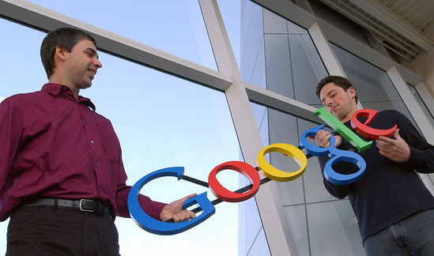

 Google internet araması, çevrim içi bilgi dağıtımı, reklam teknolojileri ve arama motorları için yatırımlar yapan çok uluslu Amerikan anonim şirketidir. İnternet tabanlı hizmet ve ürünler geliştirir, ek olarak bunlara ev sahipliği yapar. Kârının büyük kısmını AdWords programı aracılığıyla reklamlardan elde etmektedir. Şirket, Larry Page ve Sergey Brin tarafından, Stanford Üniversitesi’nde doktora öğrencisi oldukları sırada kurulmuştur. İkili, sık sık “Google Guys” olarak anılmaktadır.
Google, ilk olarak, 4 Eylül 1998 tarihinde özel bir şirket olarak kuruldu ve 19 Ağustos 2004 tarihinde halka arz edildi. Halka arzın gerçekleştiği dönemde, Larry Page, Sergey Brin ve Eric Schmidt, takip eden yirmi yıl boyunca, yani 2024 yılına kadar Google’da birlikte çalışmak üzere anlaştılar. Kuruluşundan bu yana misyonu “dünyadaki bilgiyi organize etmek ve bunu evrensel olarak erişilebilir ve kullanılabilir hale getirmektir. Gayri resmi sloganı ise, Google mühendisi Amit Patel tarafından bulunan ve Paul Buchheit tarafından desteklenen “Don’t be evil” (Kötü olma) dır. 2006 yılında, halen şirket merkezi konumunda olan Mountain View, California’ya taşınmıştır
Google'ın kuruluş süreci 1996 Ocak ayında Kaliforniya'daki Stanford Üniversitesi'nde doktora öğrencileri olan Larry Page ve Sergey Brin'in araştırma projesiyle başladı.
Geleneksel arama motorlarıyla yapılan aramalarda, sonuçlar; aranan terimlerin sayfada kaç kez görüldüğü mantığıyla sıralanıyordu, ancak Google siteler arası ilişkilerin analizi konusunda çok daha elverişli iki sistem kuramı ortaya koydu. Bu yeni teknolojiye PageRank adı veriliyordu, bu sisteme göre sayfa dizinlerinin orijinal site ile olan bağlantı dönüşümleri belirlenerek; siteler, gösterilen ilgiye göre sıralanıyordu.
Küçük bir arama motoru olan ve Robin Li tarafından IDD Bilişim Hizmetleri adına geliştirilen "RankDex", zaten 1996'dan beri site puanlaması ve sayfa sıralaması için benzer bir strateji kullanmaktaydı. RankDex, patentliydi ve Li'nin Çin'de kurulmuş olduğu Baidu adını taşıyan arama motoru bu sistemle çalışıyordu.
Page ve Brin yeni oluşturdukları arama motoruna ilk olarak "BackRub" ismini koymuştu, çünkü siteler için geri bağlantıların kontrol edilmesinin önemini tahmin edebiliyorlardı. Ancak daha sonra, "googol" sözcüğü üzerinde orijinal bir imlâ değişikliği yapılarak, bu arama motoru "Google" olarak adlandırıldı, Google arama motoruyla insanlara büyük bir bilgi kaynağının sunulduğunu belirtmek için bu isim konulmuştu, çünkü googol on üzeri yüz rakamını ifade ediyordu.
Bugün kullandığı alan adını 15 Eylül 1997'de etkinleştirdi ve 4 Eylül 1998'de Google şirketi resmen kuruldu. Şirket merkezi arkadaşları Susan Wojcicki'nin Menlo Park, Kaliforniya'da bulunan garajı olarak belirlendi. Stanford Üniversitesi'nde doktora yapan bir öğrenci olan Craig Silverstein, ilk çalışan olarak işe alındı.Bir yıl önceki rakam olan 931 milyon tekil ziyaretçi sayısındaki yüzde 8.4'lük bir artışla, 2001 Mayıs ayında; Google'nin tekil ziyaretçi sayısı ilk kez 1 milyarı buldu.
Google Arama, bir arama motoru uygulaması olup, şirketin en popüler uygulamasıdır. Kasım 2009'da comScore’un yayımladığı bir pazar araştırmasına göre, Google ABD'deki arama motoru sektörünün en çok kullanılan uygulaması olup, pazar payının %65.6'sını elinde tutmaktadır. Google milyarlarca ağ sayfası (web) dizinine sahiptir, böylece kullanıcılar anahtar kelimeler ve uygulamaların kullanımı yoluyla arzu ettikleri bilgilere ulaşmak için arama yapabilmektedir.
Google Çeviri, otuz beş farklı dil arasında çeviri yapabilen bilgisayar sistemli bir çeviri servisidir. İnternet tarayıcıları için hazırlanan bazı eklentiler, Google Çeviri'ye kolay erişim imkanı sağlamaktadır. Yazılımın kullandığı sistem dil bilimsel dizin teknolojisidir, özellikle Avrupa Parlamentosu ve BM tutanakları olmak üzere, profesyonel çeviri metinlerindeki çeviri sistemleri; program algoritması tarafından öğrenilmektedir.